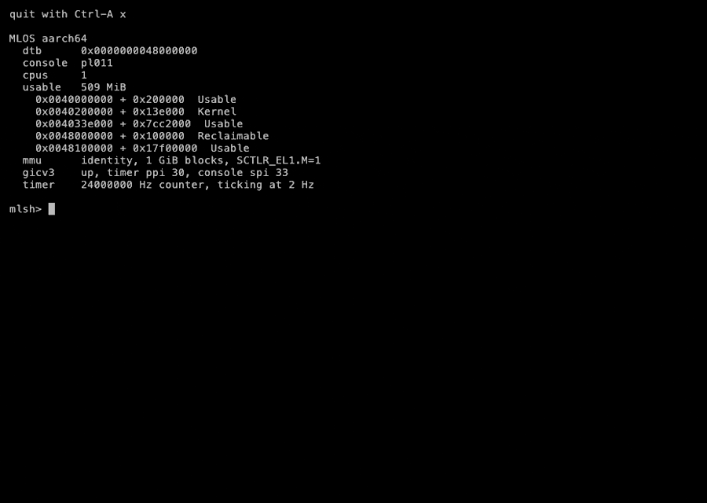
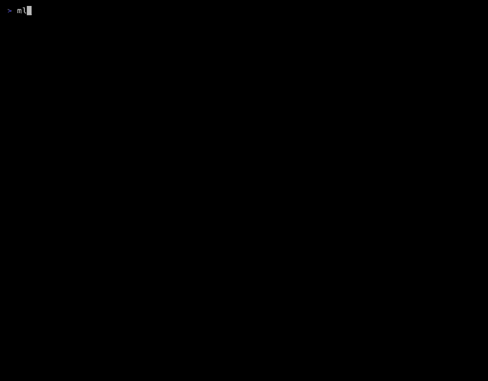

An operating system that treats machine-learning state as its primary virtualized resource, booting as a guest on two architectures. Recordings from sw-ml-study/sw-os-ml; the tapes that made them are under demos/.
Register the synthetic model against a 32 KiB arena, fault a tile in and hit it the second time, then replay the M3 workload in the kernel under LRU and next-use.

The same kernel source booted through PVH into long mode: the machine as the loader handed it over, the model faulting in over virtio-blk with its provenance nibble, a sweep timed off the TSC.
